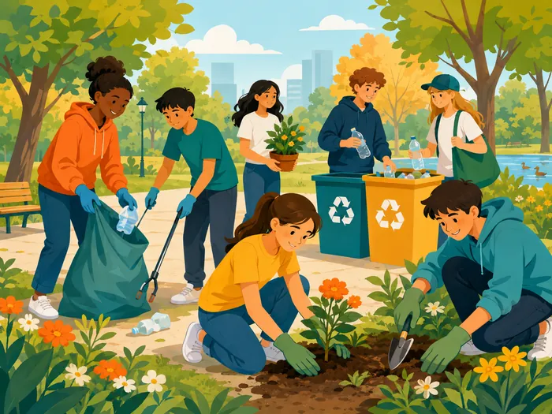
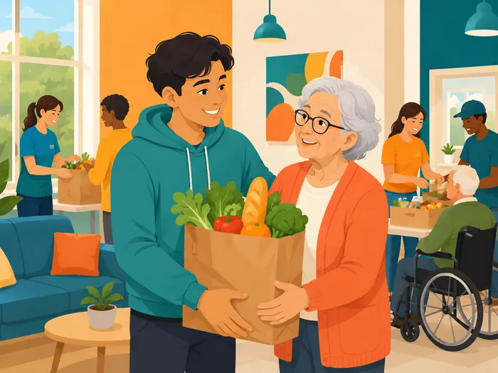
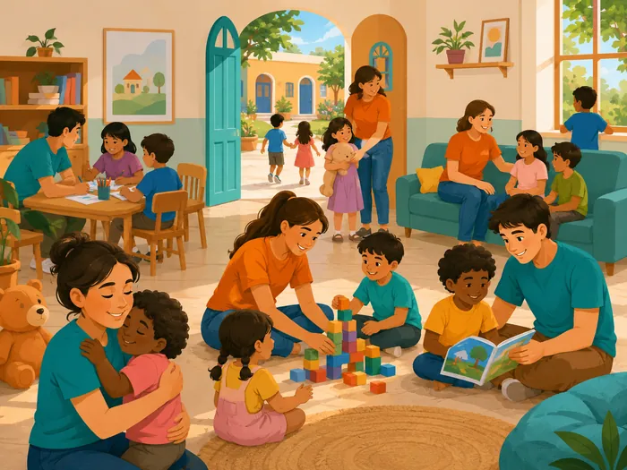
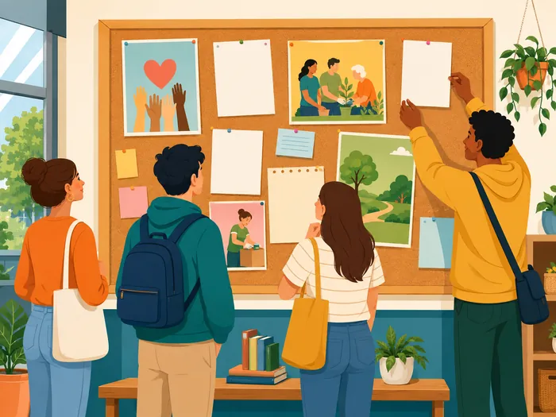
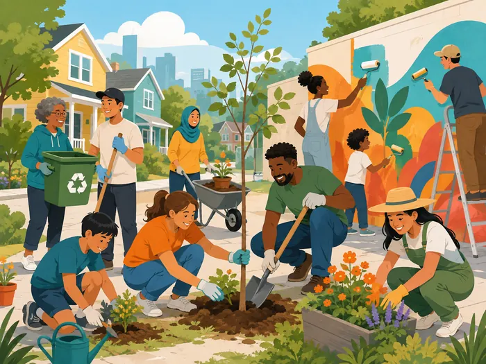
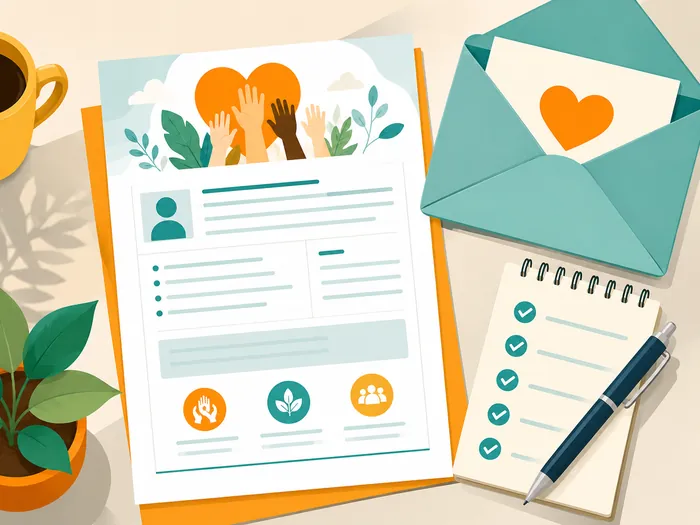
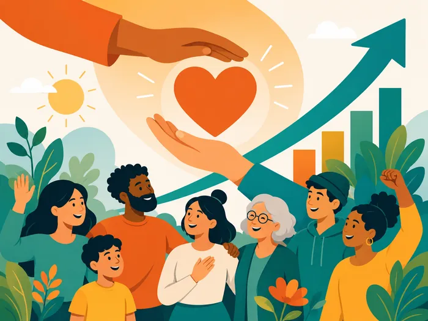

Volunteering in the community
Lesson 1 — Getting started
4Five stops in 45 minutes
- 🤝
Warm-up
Who is helping?
4 min - 🔤
Words
Six new words
7 min - 🎧
Listen & read
Tasks 1–2
12 min - 🔎
Language
Tasks 3–4
8 min - 🎭
Game
Volunteer Charades
8 min
By the end of this lesson…
- 🔤
Vocabulary
Use words about volunteering and community development.
- 📖
Read
Find specific information in a conversation.
- 🔎
Language
Notice -ed / -ing / -ful / -less adjectives and past simple vs past continuous.
Who is helping the community?
Warm-up · look and guess
4 minutesLook → guess the action → say why it helps




New words
Look · guess · say
7 minutes


Listen and read
Tasks 1 and 2 · page 42
12 minutesKim and Tam · part 1
Kim: Hi, Tam. I went to your house at 9 a.m., but you weren’t there.
Tam: Oh, when you came, I was working as a volunteer at our local centre for community development.
Kim: Ah, I see. How did you become a volunteer there?
Tam: Just by chance. Last summer, while I was visiting the centre, I saw an advertisement for volunteers. I applied and my application was successful.
Kim and Tam · part 2
Kim: I also want to be a volunteer. I find community work very interesting.
Tam: I agree. Community service not only benefits the local area, but can also boost our confidence and help us learn many useful skills.
Kim: What are the regular activities organised by the centre?
Tam: Oh, there are endless opportunities for getting involved. For example, you can join a local environmental group to clean up the park once a week or volunteer at an orphanage.
Kim and Tam · part 3
Kim: Sounds good. How can I apply?
Tam: I’ll email you the form. You just fill it in and send it in.
Kim: Thanks so much. I’m so excited about volunteering at the centre.
Tam: No problem. Good luck. Hope your application is successful and you enjoy the work.
Underline the volunteer activities. join a local environmental group to clean up the park · volunteer at an orphanage
Read the conversation again
1. What was Tam doing when Kim went to her house? She was working as a volunteer at the local centre for community development.
2. What are some regular activities at the centre for community development? Cleaning up the park and volunteering at an orphanage.
3. How can Kim apply for volunteer work at the centre? She needs to fill in the form and send it in.
Language in the conversation
Tasks 3 and 4 · page 43
8 minutesAdjectives with these suffixes
-ed: excited
-ing: interesting
-ful: useful, successful
-less: endless
Tips: -ful = full of / having · -less = without · -ed = how people feel · -ing = causing the feeling
Find a verb or verb phrase in the conversation
1. Oh, when you came, I ______ as a volunteer at our local centre for community development. was working
2. Last summer, while I was visiting the centre, I ______ an advertisement for volunteers. saw
Past continuous (was working) = the longer action · past simple (came, saw) = the short action.
Volunteer Charades
Game · act it out
8 minutesHow will you make your community better?
Talk for one minute about the activities you are going to do.
- 🤝
What?
Which activities?
- 📍
Where?
park, school, orphanage …
- 👫
Who with?
friends, family, a club
- 🔁
How often?
once a week, every summer …
What have you learnt today?
Today’s board
Words: volunteer · community development · advertisement · application · boost · orphanage
Grammar preview: when you came, I was working · while I was visiting, I saw
Project (page 51): in groups, find information about a volunteer project in your community — present it in Lesson 8.
Homework: workbook Unit 4 Getting started; prepare Lesson 2 — Language (page 43).